Game tracker for Windows Your score 00000
Playtime, sessions and achievements for every game on your PC, from Steam to games with no launcher at all. It starts counting when you play and stops when you don't.
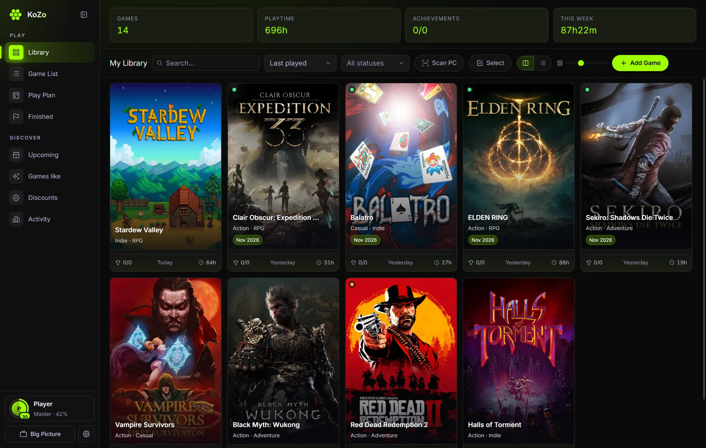
Library
Every game in one place.
Covers, playtime and achievements at a glance. The one you're playing glows. Change many games at once, with Undo, and see how much space each one takes on every disk.
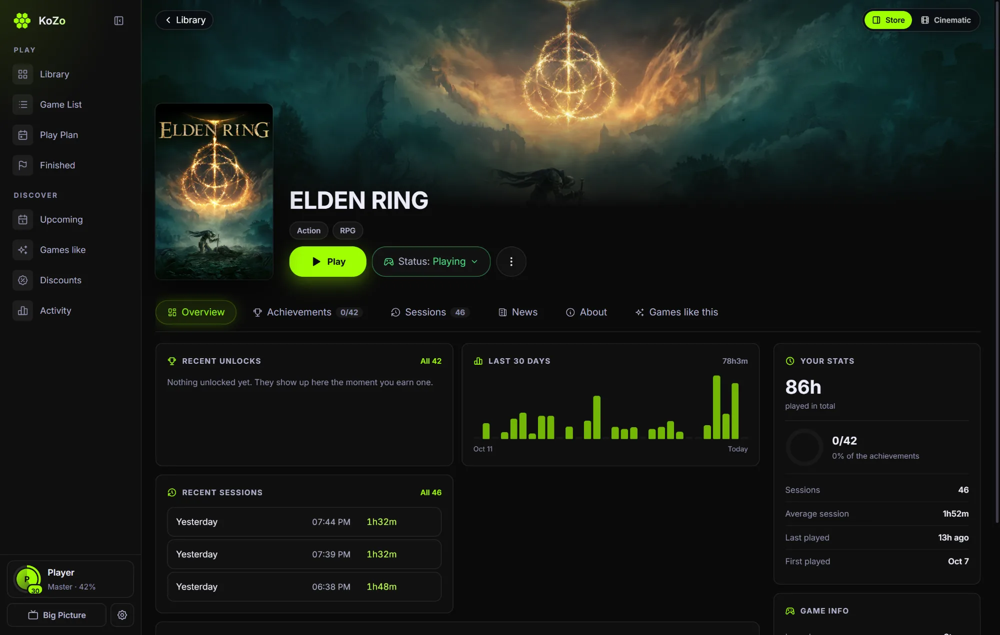
Game page
Every game has its story.
Your hours, what you earned, what to unlock next, and what changed since you last played.
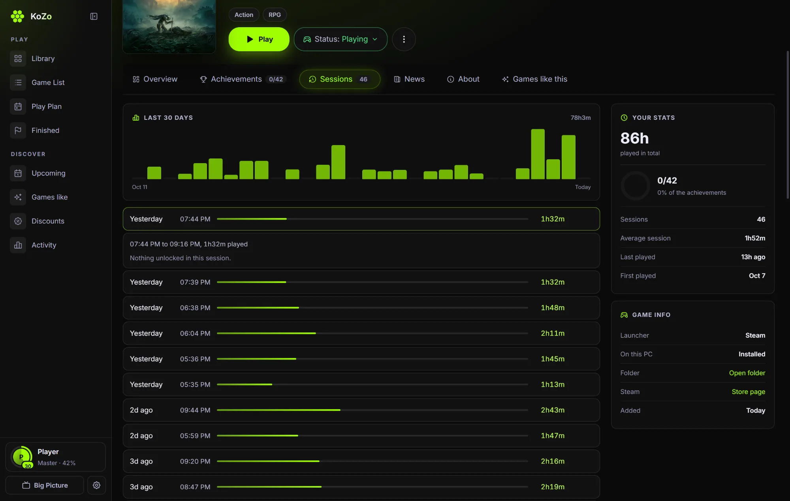
Sessions
Every session, on the record.
Open any session to see when it ran, how long you really played, and what you unlocked in it.
Achievements
A toast over your game, with the XP it's worth. It reads Steam, and for games with no launcher, the achievement files of emulators like Goldberg and CODEX. There's no sync button. Go on, press one.
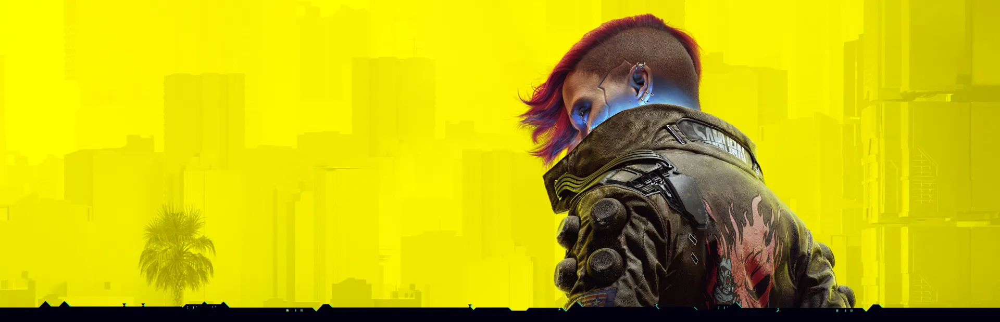
Tracking
No timer to start. KoZo sees the game open and close, and it only counts the time you're really there. You've been watching it work: leave this tab and look at the corner.
- 60s
- In another app for a minute? The clock stops, and that whole minute comes back off.
- 5m
- No keyboard, mouse or controller for five minutes counts as away. You can change both.
- <1m
- Under a minute isn't a session. A launcher flash or a crash on start leaves no trace.
- 0
- Sessions lost when the PC sleeps or KoZo closes mid-game. It picks them up again.
Last 30 days
Sample sessions. The last bar is your visit, live.
Scan PC
Ready
Your library
One button finds them: Steam, Epic, GOG, Xbox, and games with no launcher at all, including achievements from emulators like Goldberg and CODEX.
- It checks the file first. KoZo reads what a file loads before it trusts it, so a settings tool or a map editor is never mistaken for your game.
- No duplicates. The same folder or the same game shows In Library, however it's spelled.
- Moved it? Removed it? KoZo finds a game you moved to another drive, and says so when one is gone from this PC.
Game pages
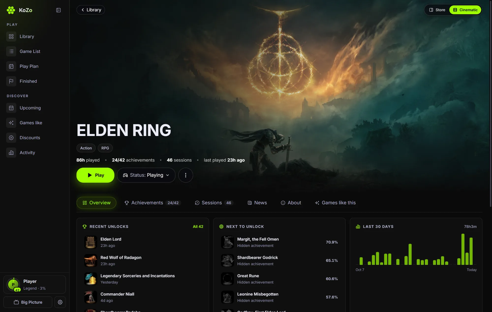
Since you last played
The developer's own news, in order, waiting for you when you come back.
Next to unlock
The locked achievements most players have, so you know what's close.
Is your copy behind?
A version tag beside the name, compared with Steam's newest build.
Two layouts
Store or Cinematic, one click. Trailers, reviews and system requirements too.
Discover
Your library knows what you like, so KoZo can tell you what's coming, what's cheap and what's worth your time.
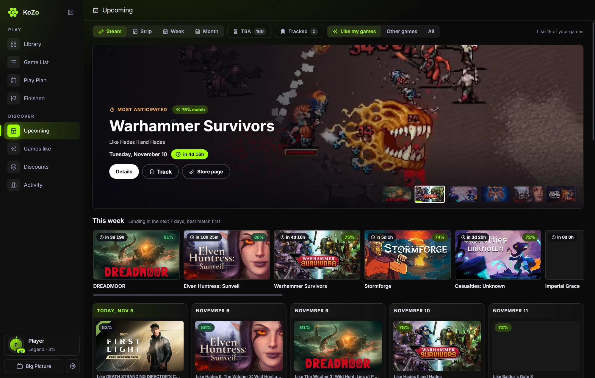
Upcoming
A release calendar laid out like Steam's. For you on Steam shows your wishlist and games like the ones you play there; Like my games shows what matches your library, best match first, with trailers.
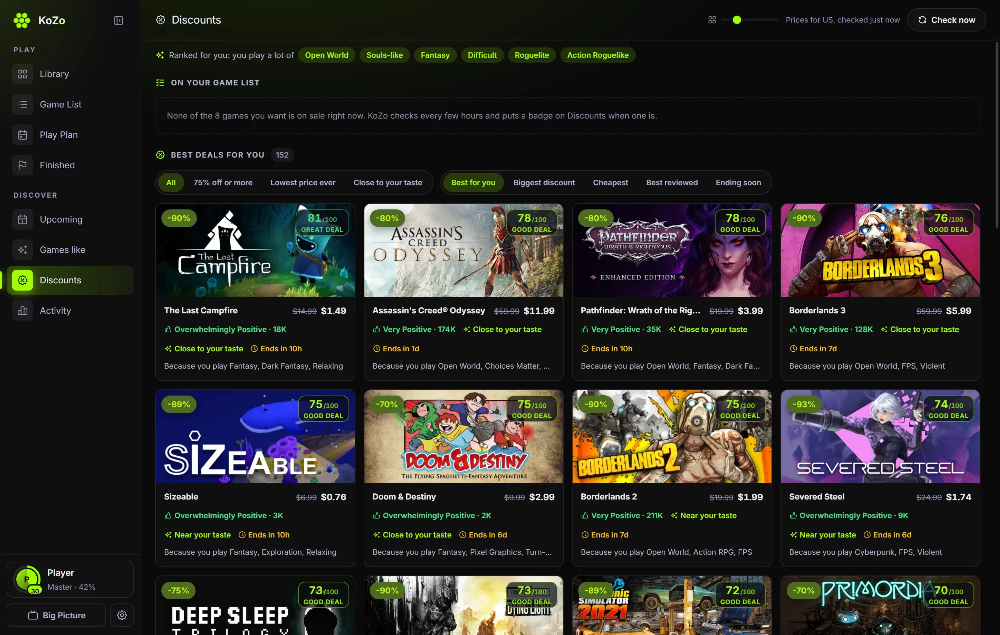
Discounts
Only sales worth a look: 500 reviews or more and at least 80% positive, ranked for you by the discount and your taste. The lowest price ever, other stores, and an alert when a game hits your price.
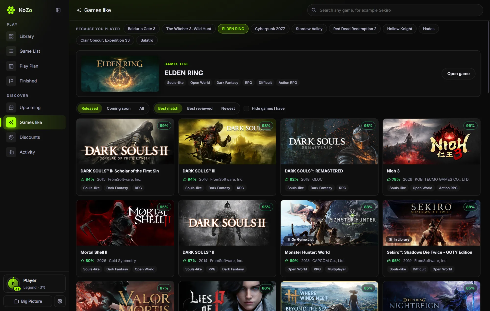
Games like
Pick any game and get its real neighbors, ranked by tags, by Steam's own suggestions and by how good the reviews are.
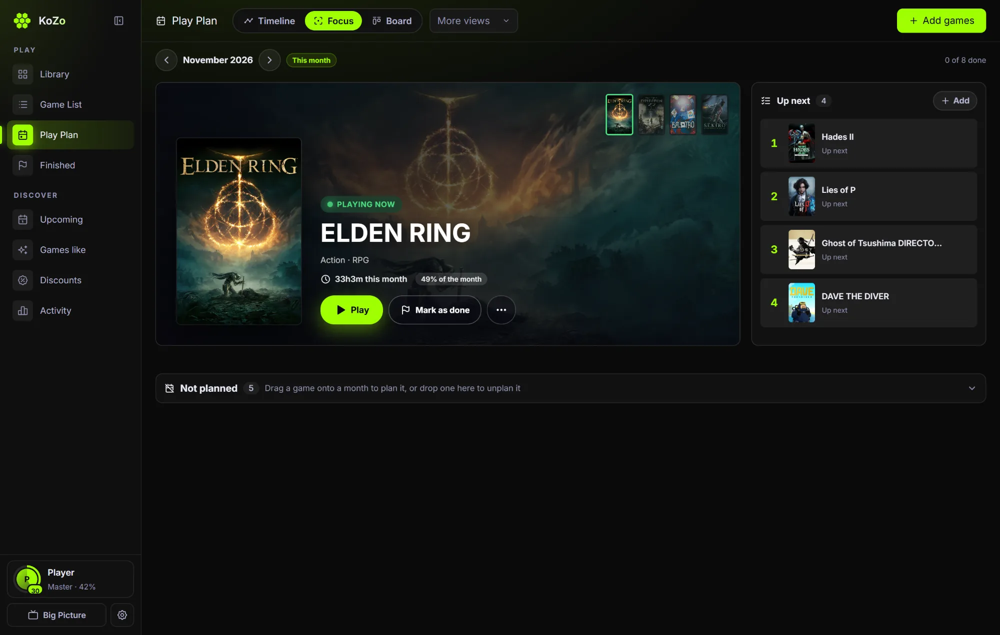
Play Plan
Plan your backlog by month and drag games around. The one you're playing fills the screen, with what's up next beside it.
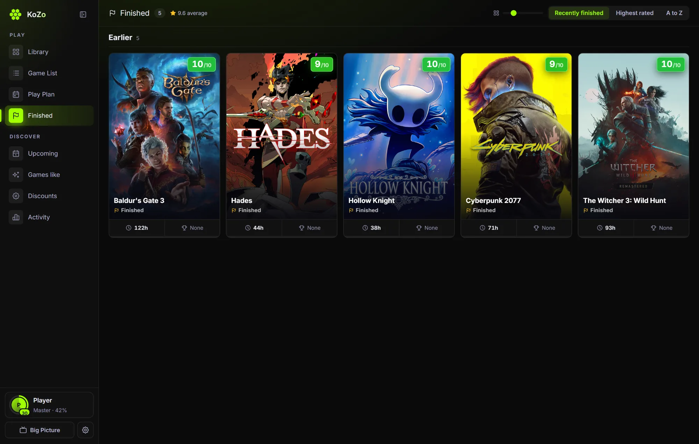
Finished
Every game you've beaten, by year, with your rating from 1 to 10. It's a satisfying wall to look at.
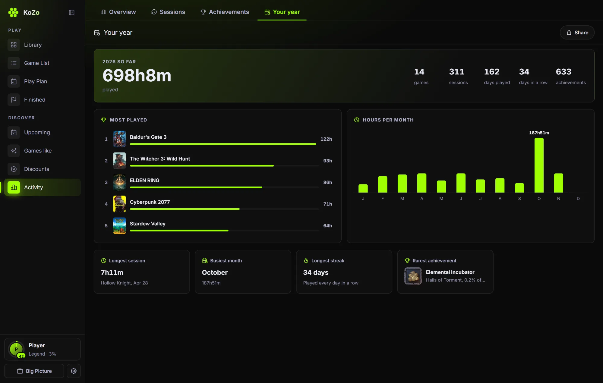
Your year
Most played, hours per month, your longest session and your rarest unlock. Share it as a picture.
Your profile
Everything you play adds up to one career. XP is worked out from your real history, so it can't drift and can't be farmed by a menu.
- +60
- for every hour you play
- +30 to 80
- for each unlock, more the rarer it is
- +50
- for each day in your longest streak
- +250
- for every game you finish
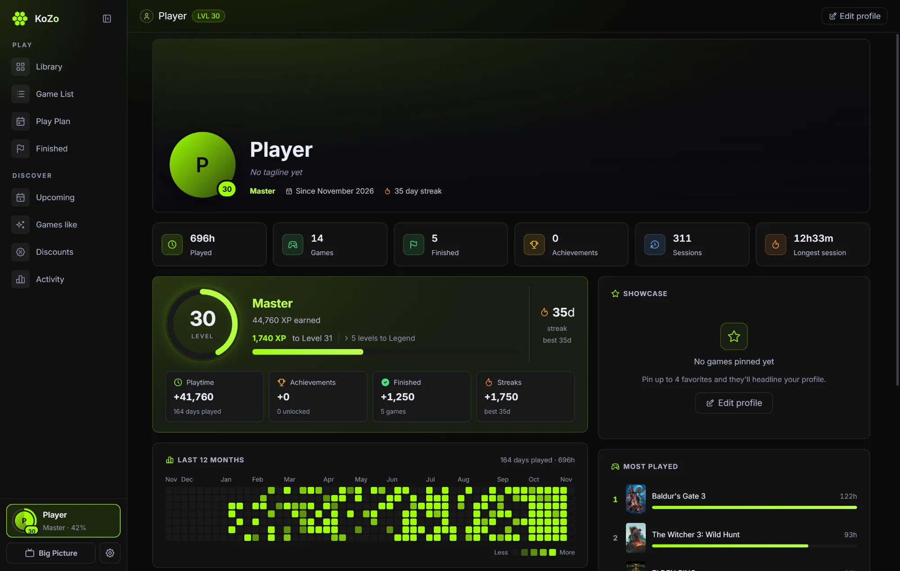
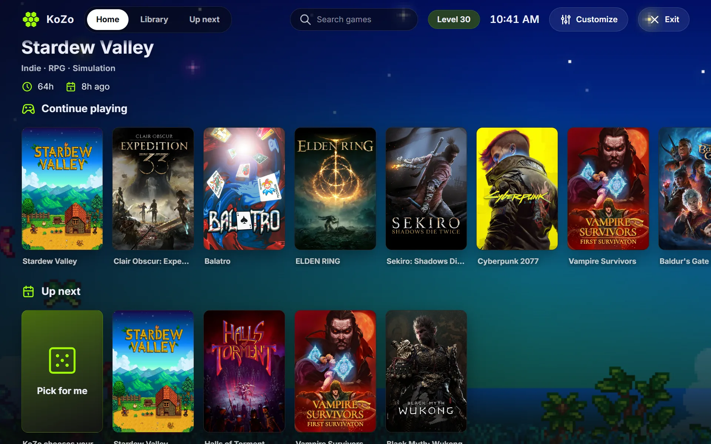
Big Picture
Full screen and built for a controller. Hold the Xbox button anywhere and KoZo comes up, even from the tray. Browse, play, rate and check achievements without touching the keyboard. Make it yours too: three layouts, tall or wide covers, your focus color, and Xbox or PlayStation buttons.
Got a controller? Connect it and press A.
Appearance
Same app, all real settings. Press one, and this page changes with it.
- Light, dark, or follow Windows
- Any background and text color
- Twelve colors, or your own
- Card styles, fonts and page width
- Slim sidebar, your own tab order
- A wallpaper behind everything
- Share your look as a code
- Big Picture your way
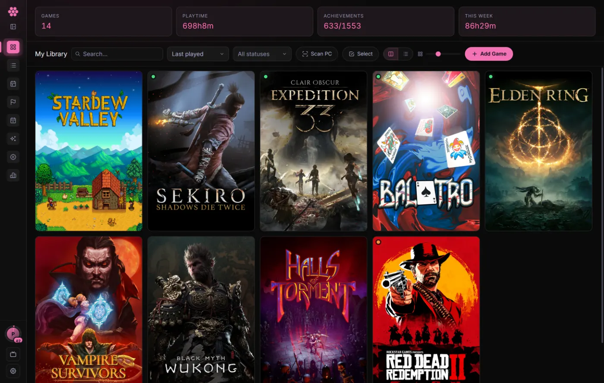
Restore points
SampleBackups
KoZo finds each game's saves by itself and backs them up before and after you play. No clicks, and nothing to set up.
- Put any one back. The save you have now is kept first, so a restore can always be undone.
- Kept the smart way. Everything for 7 days, one a day to 30, one a week to 90, and small because files are only stored once.
- Off this PC too. A copy in Google Drive for Desktop, Dropbox, MEGA, iCloud, any folder or a USB stick, or everything in one .kozo file.
- Updates keep your progress. When an update changes where a game keeps its saves, KoZo notices and brings your progress over, for any game.
- New PC, same library. Bring in a backup from another PC and it merges: games are matched by name and Steam id, and nothing is added twice.
Built for people who play
Nothing draws behind your game
When KoZo isn't the app in front, every animation stops. The overlay only appears for a toast.
Nothing new starts mid-game
One small helper, started before you play. No new processes while you're playing.
Heavy work waits for you
Backups, art and scans run after you close the game, one at a time, so the PC doesn't stutter.
Your data is yours
No account and no tracking. Your library is on your PC, and KoZo has no server to send it to.
Out of the way when you play
KoZo can minimize itself the moment a game starts, and the tray menu opens at once.
Open source, MIT licensed
Every line is public. Read it on GitHub.
Session complete
- 0:00
- played here, away time not counted
- 0/7
- achievements
- Level 1
- Rookie
Questions
Which games does it work with?
Steam, Epic, GOG, Xbox, EA and Ubisoft, and games with no launcher at all, including achievements from emulators like Goldberg and CODEX. If it runs on your PC, you can add it.
Will it slow my games down?
It's built not to. KoZo stops its animations behind your game, starts no new processes while you play, and leaves heavy work until you close the game.
Why does Windows warn me when I install it?
The installer isn't code signed yet, so Windows may show "Windows protected your PC". Choose More info, then Run anyway. All of the code is public on GitHub if you want to check it first.
Do I need a Steam account?
No. Connecting Steam brings in your Steam unlocks, and everything else works without it.
Where does my data live?
On your PC. Backups go where you choose. KoZo has no server of its own. It asks Steam, SteamGridDB and CheapShark for art, game details and prices. The privacy page has the details.
Does it work on Mac or Linux?
Not at the moment. KoZo runs on Windows 10 and 11.
Does it update itself?
Yes. A new version downloads by itself, and KoZo asks if you want to restart now, never while you're playing. If you'd rather wait, it installs the next time you quit KoZo.